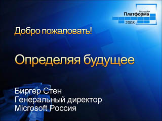
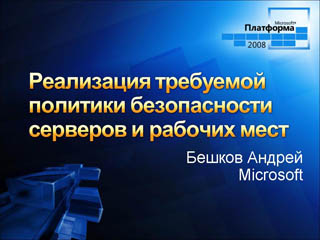
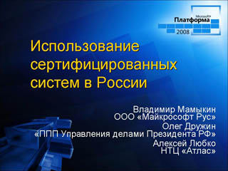
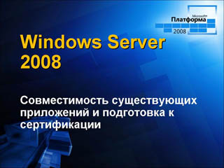
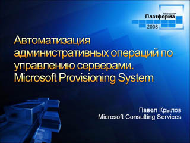
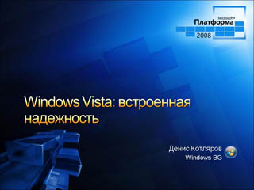
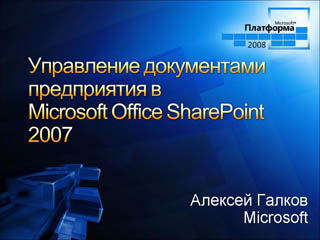
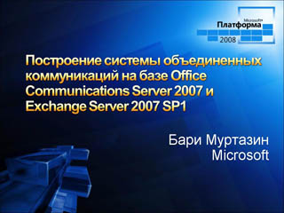
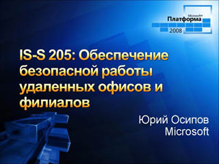

Пленарный доклад

Speaker(s): Эрик Раддер, Биргер Стен
Реализация требуемой политики безопасности рабочих мест

Speaker(s): Андрей Бешков
Использование сертифицированных систем в России

Speaker(s): Владимир Мамыкин
Вопросы совместимости приложений с Windows Server 2008

Speaker(s): Алексей Федоров
Автоматизация административных операций по управлению серверами (Microsoft Provisioning System)

Speaker(s): Павел Крылов
Технологии обеспечения отказоустойчивости Windows Vista

Speaker(s): Денис Котляров
Управление документами предприятия в Microsoft Office SharePoint Server 2007

Speaker(s): Алексей Галков
Построение системы объединенных коммуникаций на базе Office Communications Server 2007 и Exchange Server 2007 SP1

Speaker(s): Бари Муртазин
Обеспечение безопасной работы удаленных офисов и филиалов

Speaker(s): Юрий Осипов